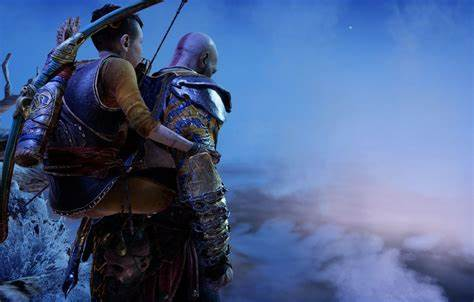

"God of War" (2018) é um épico jogo de ação e aventura que redefine a mitologia nórdica através da jornada de Kratos, o temido Deus da Guerra, e seu filho Atreus. Ambientado em um mundo vasto e repleto de perigos, o jogo mergulha os jogadores em uma narrativa emocionante e cheia de reviravoltas. Após os eventos dos jogos anteriores da série, Kratos busca uma vida de paz e redenção nas terras dos deuses nórdicos. Ele agora vive recluso nas terras geladas, tentando escapar de seu passado violento e ocultar sua verdadeira identidade divina de seu filho Atreus. No entanto, quando a esposa de Kratos, Faye, falece, os dois embarcam em uma jornada para cumprir seu último desejo: espalhar suas cinzas no pico mais alto dos Nove Reinos. Esta simples tarefa logo se transforma em uma odisseia perigosa, já que pai e filho são confrontados com deuses, monstros e criaturas misteriosas ao longo do caminho. A relação entre Kratos e Atreus é o cerne da narrativa, evoluindo de uma dinâmica tensa para uma conexão profunda à medida que enfrentam desafios juntos. Kratos, uma vez conhecido por sua fúria implacável, agora luta para controlar sua raiva enquanto orienta seu filho em um mundo hostil e cheio de segredos. Além da narrativa envolvente, "God of War" é aclamado por sua jogabilidade intensa e visceral. Os jogadores enfrentam batalhas épicas contra criaturas mitológicas e chefes colossais, utilizando o machado mágico de Kratos, Leviathan, e as habilidades de combate de ambos os personagens. Com visuais deslumbrantes, uma trilha sonora épica e uma história emocionante, "God of War" (2018) é uma experiência inesquecível que redefine os limites do que um jogo de vídeo pode alcançar.

 Download God of War
Download God of War